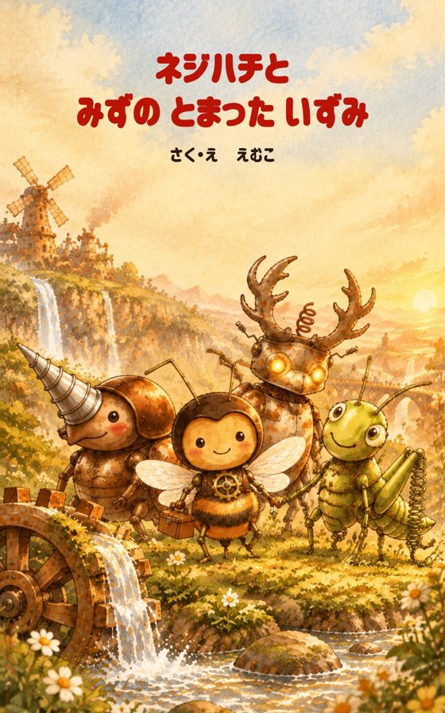
2冊目・夏
ネジハチと みずの とまった いずみ
なつが きた。もりの まんなかの いずみで、すいしゃが とまっていた。
準備中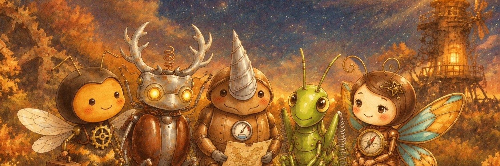
「できない！」とあせってしまう子に。
つい「はやく！」と言ってしまうおうちの人に。
ねじと工具でできた虫たちが、森のこまりごとを直しにいく絵本です。文に漢字を使っていないので、4〜7歳の子がひとりでも読めます。
「あせらないで。かぜは ゆっくり もどるんだ」
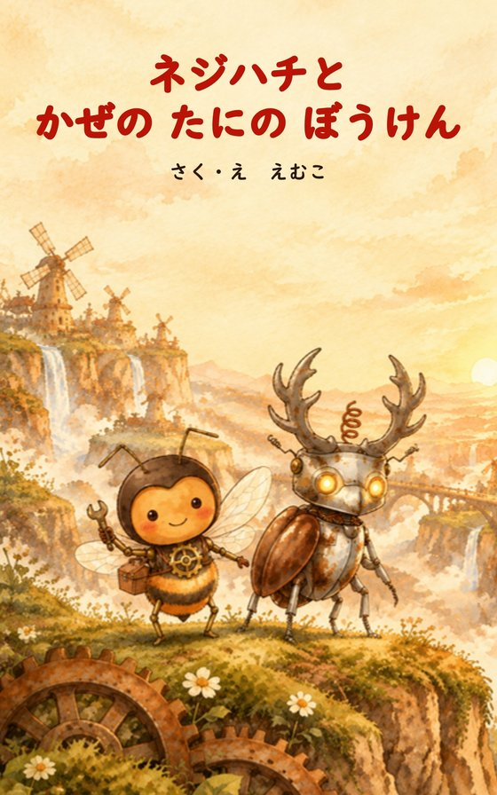
森から風がきえてしまいました。ネジハチは「かぜの たに」へむかいます。とちゅうで電線のクワガタ・デンコと出会い、ふたりで谷のまん中の大きなファンにたどりつきます。
森に風はもどるのでしょうか。ネジハチがねじを回すたびに、「くる、くる、きゅっ。」と音が鳴ります。
おはなしの前半から3ページです。
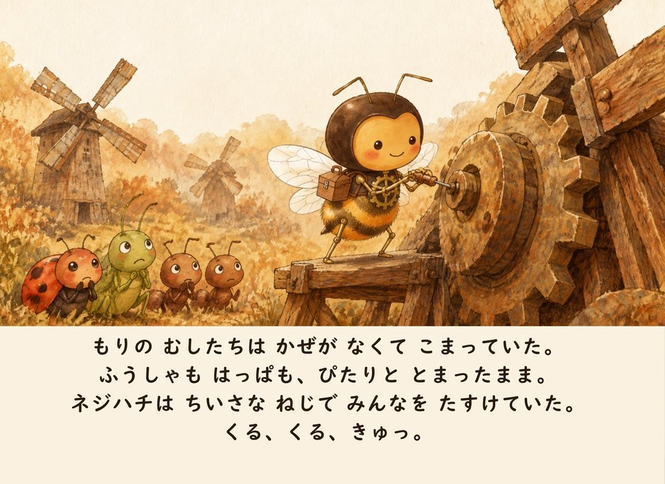
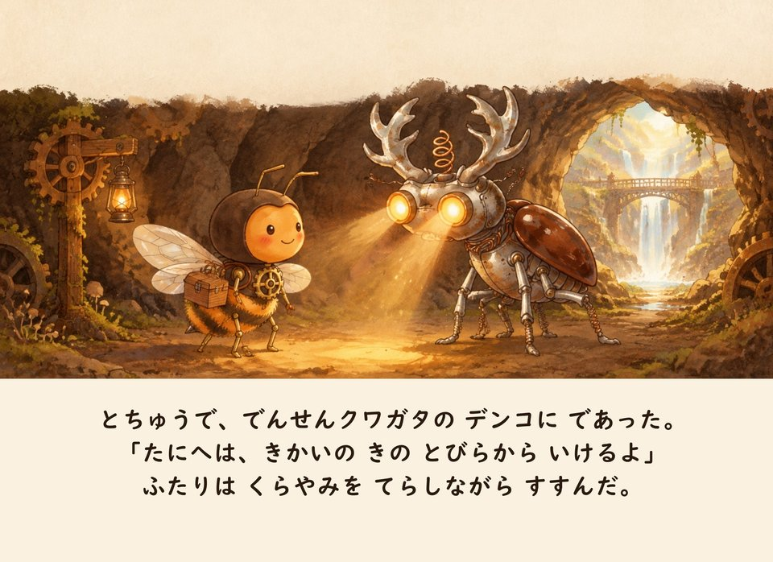
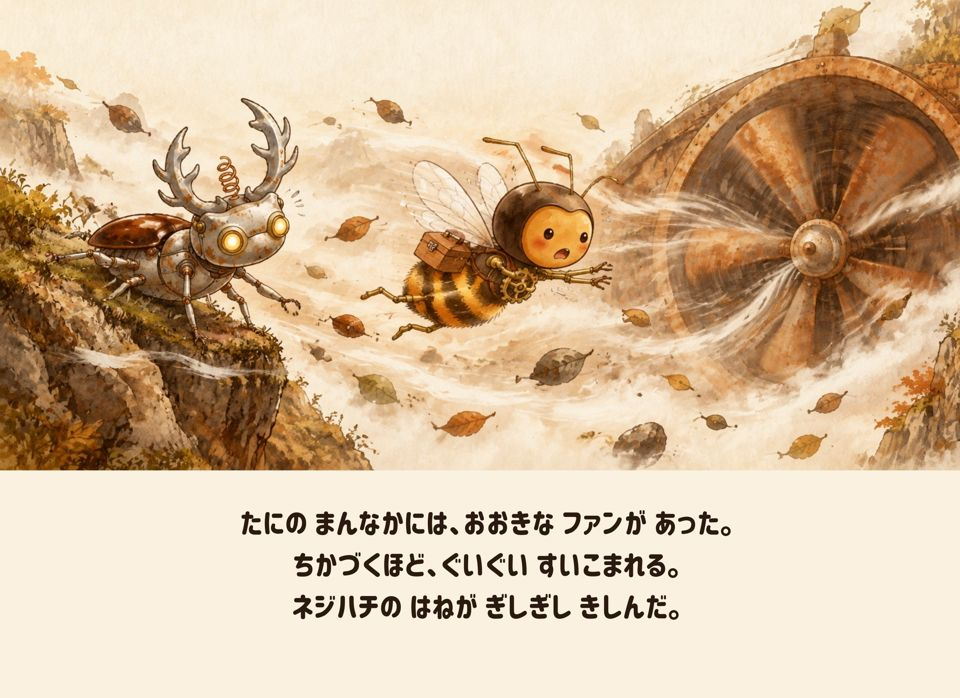
おはなしのあとに、図鑑とぬりえのページがあります。
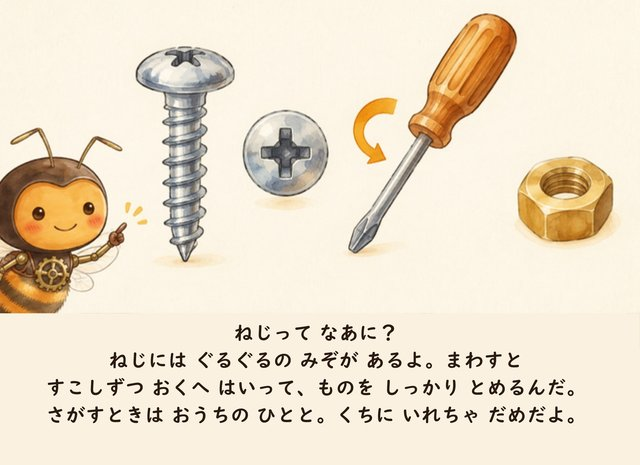
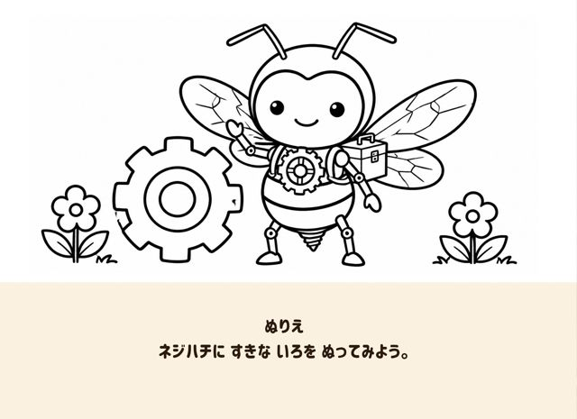
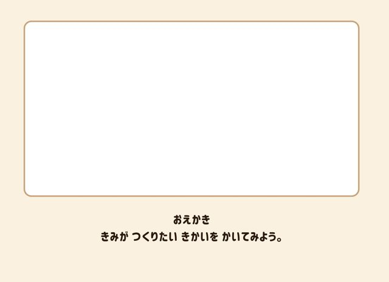
おはなしの中の「くる、くる、きゅっ。」は、1冊に3〜4回出てきます。読み聞かせのときは、子どもといっしょに声に出してみてください。
どれも1冊で終わるおはなしです。夏、秋、冬、春と季節が進みます。

なつが きた。もりの まんなかの いずみで、すいしゃが とまっていた。
準備中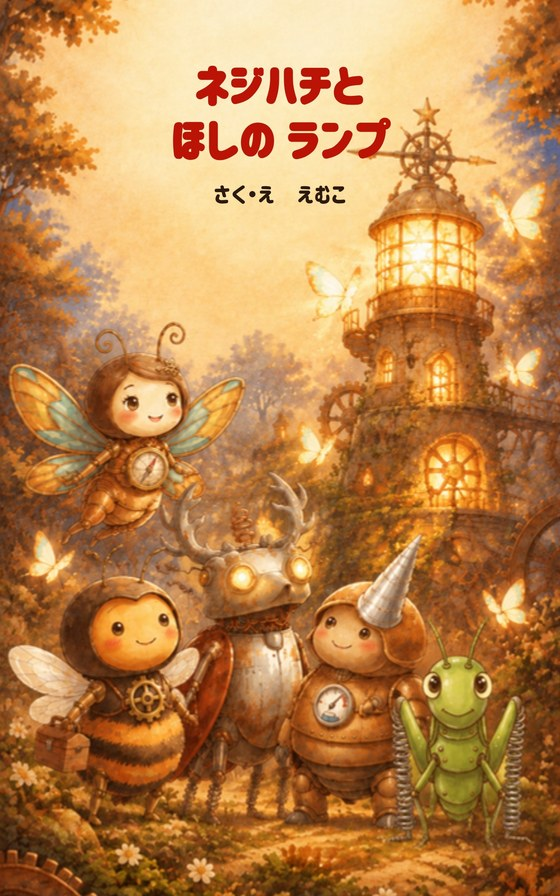
あきの よる、チョウたちの めじるしの ほしの ランプが きえてしまった。
準備中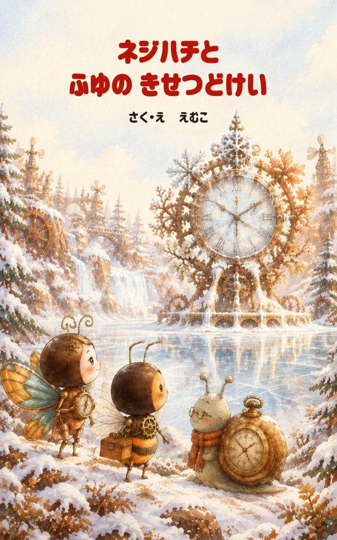
ふゆが きた。もりは ゆきに うもれて、むしたちは はるを まっていた。
準備中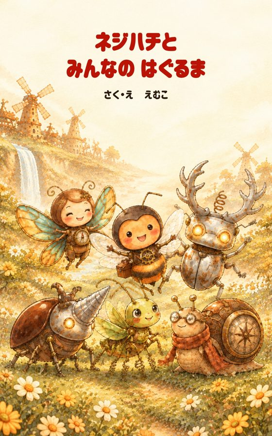
はる、もりでは「はぐるま まつり」の じゅんびが はじまった。
準備中みんな「工具」と「虫」の組み合わせでできています。
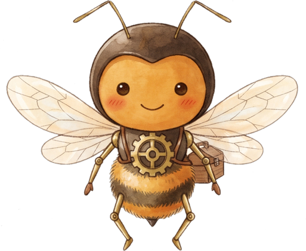
主人公 ・ ねじ × ミツバチコツコツ型。でも、大事な場面ではあわてて力にたよってしまう。
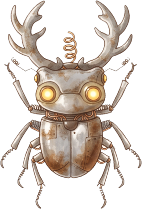
電線 × クワガタ目がライト。おちついていて、ネジハチがあわてると止めてくれる。
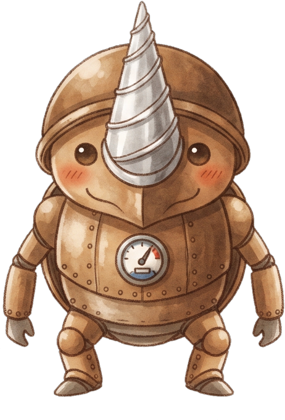
ドリル × カブトムシ力もち。止まるのがにがて。
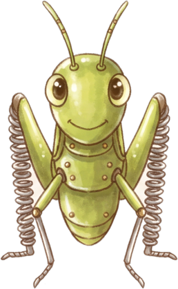
バネ × バッタせっかちで、いちばんのりがしたい。
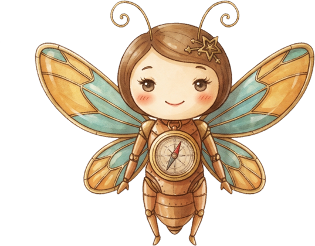
方位磁石 × チョウむれの先頭をとぶ、たよれる女の子。
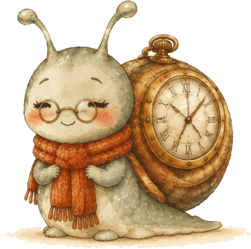
時計 × カタツムリ森でいちばん年より。とてもゆっくり。
文は漢字を使わず、ひらがなとカタカナだけで書いています。言葉の間をあけ、1ページは4行までです。
図鑑を読むと、本物のねじをさがしたくなる子もいます。本の中でも「さがすときは おうちの ひとと」と書いています。小さなねじを口に入れないよう、そばで見ていてください。
共働きの毎日のなかで、わたしはつい子どもに「はやく」と言ってしまっていました。
もっとゆっくり過ごしてあげればよかった。
その思いから、ネジハチのお話は生まれました。
さく・え えむこ